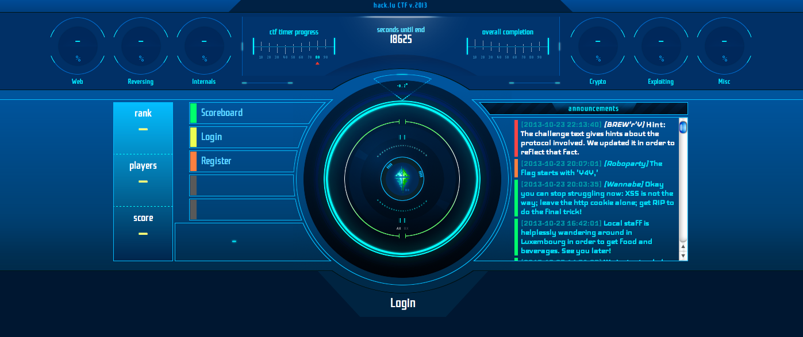
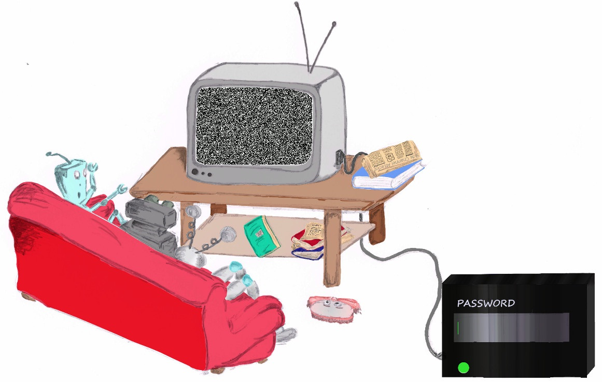

On Tuesday and Wednesday evening, team Pi Backwards, hosted by AltF4, competed in a Capture The Flag game put on by FluxFingers, a team from Germany. Capture The Flag is one of the closest things you'll find at HeatSync to Hollywood's version of computer hackers. Just take a look at the homepage for this last week's CTF. Very hackery:

AltF4 explained to The Weekly Sync that the most common type of CTF game is jeopardy, which entails solving different kinds challenges for varying amounts of points. There are categories like cryptography, web, encryption, exploitation and miscellaneous and competitions typically last for about 48 hours. That's the type of game that Pi Backwards was participating in last week.
AltF4, who has a Master's in computer science, said that when he graduated from college, it became clear to him that there were a lot of questions that his education hadn't answered. He said he had learned a lot of "You shouldn't do thing X" but when it came to the "why", the answer was often "because bad things will happen. For him, CTF is a good way to learn and stay on top of the in-depth why's and why-nots of security practices. It's also a fun way to learn about important computing concepts for people at all skill levels. Though some of the challenges require very advanced knowledge, there really are challenges that are accessible to beginners, like web problems, where all you need to get started is a browser.
For example, one of the challenges that Pi Backwards solved during the competition, sends players to this website with the instructions to help the "robo-friends" watch a paywall protected broadcast of "Oktoberfest."

For this kind of challenge, one of the participants explained, the best thing to do is to just start look for clues on the page and in the source code. In this case, there is a clue hidden in the newspaper on the of the TV table. The headline says "Side Channel Attacks," which is a type of attack that exploits information gained from analysing a secondary effects of whatever system you want to know more about. An example of this that AltF4 gave, is measuring the amount of power a system draws while it is encrypting data to get information about the way the data is being encrypted. Other examples include, the amount of heat something is giving off, the sound it makes and the amount of time it takes to do a task.
A second clue was hidden in the javascript for the website. In the line of javascript that sends the password attempt to the FluxFingers server for evaluation, was the one-word instruction "&debug," but it was commented out so that it wouldn't be executed. Normally, an incorrect password on this site just returned the password attempt and message saying that it was incorrect. But when the debug instruction is active, the amount of time that it took for the server to process whether the password was correct or not is also returned.
At that point it was just a matter of evaluating the processing time for each possible character. Nate P. started out by sending the FluxFingers server 36 different single-character password attempts by hand, trying A-Z and 0-9, with the debug option uncommented. He noticed that the server took one millisecond longer to evaluate the letter "A" then it did ti evaluate the other characters. And with that, he had the first character of the correct password. Nate actually got pretty far sending password guesses one character at a time, by hand before someone wrote a script to automate the process.
AltF4 said it would be pretty unlikely to find a vulnerability exactly like this in real life. FluxFingers probably built in a one millisecond delay to make the difference between the evaluation time of correct and incorrect characters very obvious. It's also unlikely that there would be a neat, built-in tool for measure the delay. But the point of the exercise was to get into the mindset that computing has secondary consequences that leak information, and those leaks can be a big problem.
AltF4 said that anyone is welcome to come down to the lab or join in online for competitions and play on team Pi Backwards. Even though last week's competition was at an awkward time for people to get together (competitions don't usually happen in the middle of the week), AltF4 said that they had eight to 12 people in-person and online play for about four hours on Tuesday, which tapered off to three or four people on Wednesday. Even so, they finished the competition in 140th place out of the 349 teams that had points on the board.